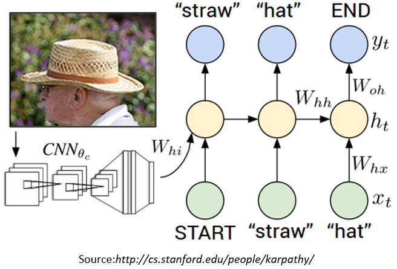
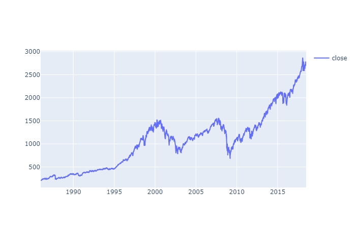

Image Captioning :
An image to caption model which can predict caption for real world images.Model architecture is a CNN encoder and RNN Decoder.
Pretrained InceptionV3 is used for CNN Encoder and its last hidden layer is used as Embedding.
We use image features as an initial state of RNN.During Training,ground truth tokens are fed into lstm to get prediction for next token.
For implementation and documentation,View this project on GitHub
Anamoly Detection in Time Series Data of S&P500 :
This project is Anomaly detection in closing prices of S&P500 time series data using LSTM autoencoder.
S&P500 index is a stock market index that measures the stock performance of 500 large companies listed on stock exchanges in the United States. It is one of the most commonly followed equity indices, and many consider it to be one of the best representations of the U.S. stock market.The time series data looks like(From Google):-
As LSTM network is best for time series Data so,this Project trains an LSTM autoencoder using the Keras API with Tensorflow 2 as the backend to detect anomalies (Sudden price changes) in the S&P 500 index.
For implementation and documentation,View this project on GitHub
Face Generation using GAN:
We use two Networks here one is Generator which takes random noize for inspiration and tries to generate a face sample.
Second is Discriminator which takes a face sample and tries to tell if it's real or fake. i.e it predicts the probability of input image being a real face.

During Training we train the disciminator to distinguish between real data and the data generated from Generator and then train the generator to make discriminator think that generated data is real(Fool the discriminator) and this process is iterated.There is snippet of generated faces from trained model above after training for 15k iterations.
For implementation and documentation,View this project on GitHub
Sentiment Extraction From Twitter review Dataset :
Classifying Sentiment related to a tweet to Positive or Negative.
Sentiment extraction from a text nowadays is quite popular, like from building Q&A chatbots to identifying bias related issue (regarding caste,colour etc.) from text.There are many different models build for this task initially it was Naive Bayes(which just do counting and is not good for sentiment analysis) then now most popular one LSTM.
Dataset comprises of 160,0000 Tweets labeled with 0 and 1 in sense of sentiment related to it , The data is available on Kaggle.To get a better sense of sentiment attached to given tweet GloVe is used which gives us a Embedding Matrix for different words representation in higher dimensions.A Sequential model of LSTM network with Convolutions is trained on given dataset.
Training on whole(160,0000 tweets)dataset takes a long time on my laptop because of not so good spec. :( ,so i trained it on 500,000 tweets and used a validation set of 5000 examples and it acheives nearly 77% accuracy on validation set. We can still improve the performance by training on a much bigger dataset.
For implementation and documentation,View this project on GitHub
Fake News Detection:
Fake news is growing day by day and there is a need of a way to differentiate between fake and real news.The Dataset is from kaggle which contains articles of fake and real news.
Preprocessing is done on the text like scrapping html tags,padding,removing stopwords.Glove(100d) Vector representation of words to capture better relation between words.Model architecture comprises of two stacked LSTM layers.
Got 99.87% accuracy on training set and 99.92 on test set.
For implementation and documentation,View this project on GitHub
Image Steganography :
Embedding a secret message into an image using steganography.
Steganography is a technique of hiding secret data within an ordinary non-secret file or message to avoid any detection, the secret data is then extracted at its destination.It can be used to conceal almost any type of digital content including text,image ,video or audio content etc.Here i have done Image steganography i.e. embedding secret message in an image.
There are several ways in which this can be done i have used Least significant bit method.Also,to increase the security of message a bit encryption method is also used.
For implementation and documentation,View this project on GitHub
You can find more projects on my github.